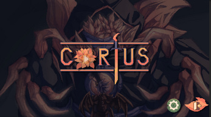

Cortus is a 2D game developed for Windows and Android in Unity, that was created in a week for the 2023 NYP x H2 Games Game Jam which won the award of most popular game.
With a team of 3 programmers and 2 artists,
I was the lead programmer and project manager. Cortus is a unique
endless runner where the player has to control the environment instead of the player.
The Lotus Knight has taken control over the Dragon kingdom. His roots extend throughout the kingdom, swallowing everything. Lotuses bloom all around. The dragon people have become his puppets, but Sir Dragonlot refuses to yield. Will he be able to defeat the Lotus Knight?
I worked on the entire gameplay loop with the endless levels. The other programmers in my team
worked on audio, input and player health, but I had to integrate those myself. I also found myself
needing to work on their stuff because it did not work properly like the mobile swiping.
This was my first time developing a build, not only for Windows, but for a game. Hence, I learnt
alot about developing for release and learnt a lot of tools to debug the build like Android Logcat.
I learnt more modern Unity features like the new Input System.
I imported the sprites and created shaders for the sprites to add some nice post-processing effects.
I worked on the level design of the game, I created all the levels using Unity's Tilemap editor and
made the player randomly progress through the levels. I also added the decoration which was provided by the artists.

I also worked on the UI of the game, I did up the menu and made the starting transition and fixed UI bugs which
were left by the other programmers.
I had to work with programmers that were not willing to partake in the Game Jam (partly fault to NYP),
so I did my best to be pragmatic and stoic with whatever features I was able to come up with.
I gave the other two programmers tasks of less priority and importance just in case they did not do them.
At first, we were aiming for complete random level generation, but that was not feasible in a week as found by
day 3, seeing how we did not have much progress on the game. Hence, I took the executive decision to
salvage whatever gameplay we had so we had something to submit.
Our means of communication online was through Discord. I communicated their tasks through Jira which I managed and upheld throughout the game jam, and teaching them
along the way, since they were new to the technology. This was also my first time collaborating with artists, so we set up a channel for
the artists to share their finished work with us.